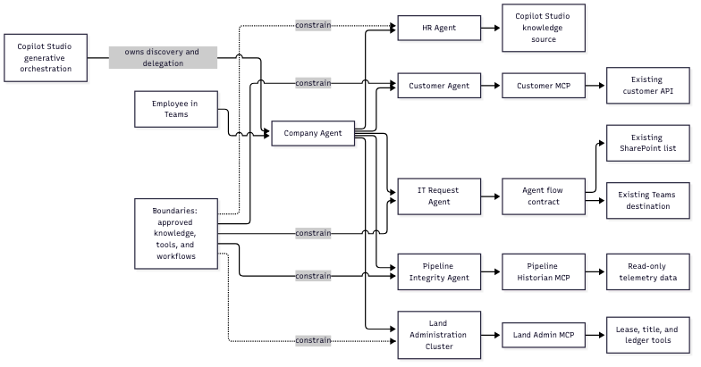

This repository is a small reference solution for composing bounded Copilot Studio agents around existing applications and deterministic workflows.

employeeName,
requestType, description, and
isUrgent, then calls the approved Agent flow. The flow
reuses the existing SharePoint list and Teams destination.The repository is the source of truth for local agent and workflow contracts.
| Boundary | Contract or implementation | Result |
|---|---|---|
| Front door | agents/company-agent/agent.yaml |
Native Copilot Studio delegation |
| HR | agents/hr-agent/agent.yaml |
Approved policy guidance |
| Customer | agents/customer-agent/agent.yaml,
customer_mcp/server.py |
Read-only customer lookup |
| IT request | agents/it-request-agent/agent.yaml,
it-request-workflow/agent-flow.contract.json |
Service Request ID and status |
| Pipeline | agents/pipeline-integrity/agent.yaml,
pipeline_historian_mcp/ |
Observed telemetry and screening result |
| Land administration | agents/land-admin/agent.yaml,
land_admin_mcp/ |
Extracted facts and confirmed ledger result |
The IT Agent flow is an agent-callable entry point to the existing business process. It does not replace the Forms-triggered flow.
Agent inputs
-> normalize and validate
-> SharePoint Create item in the existing list
-> SharePoint Update item with SR-###
-> Teams Post card to the existing destination
-> serviceRequestId, status, and resultThe flow must return the observed Service Request ID and status before the agent reports that the request succeeded. The flow must not create a new Forms flow, SharePoint list, Teams team, or replacement workflow.
This architecture does not add a repository-side router, a central orchestration API, a generalized department framework, or unrestricted database access. It keeps discovery and delegation in Copilot Studio and keeps deterministic workflows and existing APIs authoritative.